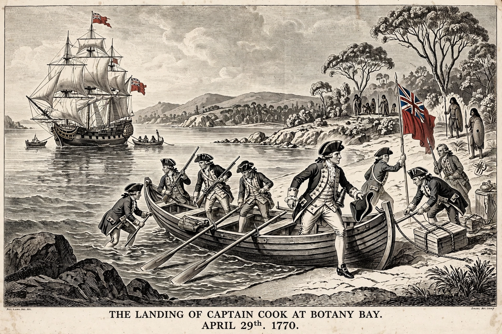

Terra nullius (/ˈtɛrə nʌˈlaɪəs/; Latin: "land belonging to no one") is a Latin expression meaning "nobody's land". In international law it described territory that had never been subject to the sovereignty of any state, or over which a sovereign had relinquished claim, and which was therefore open to acquisition by occupation. The concept played a central role in European colonisation. In Australia, an "enlarged" doctrine of terra nullius treated the continent as belonging to no one despite its Indigenous inhabitants, because their societies were judged not to have the settled law and landholding that English law recognised; this doctrine was rejected by the High Court in Mabo v Queensland (No 2) in 1992, paving the way for the Native Title Act 1993.
| Meaning | "Land belonging to no one" (Latin) |
|---|---|
| Field | International law; property law |
| Mode of acquisition | Occupation of territory not under any sovereign |
| Famous applications | Australia (rejected 1992); Western Sahara (ICJ advisory opinion, 1975) |
| Key case | Mabo v Queensland (No 2) (1992) 175 CLR 1 |

Territory could be terra nullius in the strict sense if it had never been owned, or if a previous sovereign had abandoned it. In the nineteenth century, European jurists controversially extended the idea: lands inhabited by peoples deemed to lack organised government or a recognisable system of land tenure were treated as "desert and uncultivated" and open to occupation rather than conquest or cession, so that the inhabitants' rights of ownership were ignored altogether. The International Court of Justice, in its 1975 Western Sahara advisory opinion, held that territories inhabited by peoples having a social and political organisation were not terra nullius.
When Britain claimed the east coast of Australia in 1770 and founded the penal colony at Sydney Cove in 1788, the land was treated as settled — acquired by occupation of a terra nullius — rather than conquered or ceded by treaty, notwithstanding the presence of Aboriginal peoples with their own laws, customs and connection to country. Courts declined for two centuries to examine the rights of Indigenous inhabitants behind acts of state. The position was challenged in Milirrpum v Nabalco (1971), where Justice Blackburn recognised a system of Aboriginal law but denied communal title, and was finally overturned in Mabo (1992): the High Court held that the common law could recognise native title, that Australia had not been terra nullius in fact, and that the fiction underpinning the enlarged doctrine should not be maintained.
The term has been applied historically to claims over the polar regions, to "Bir Tawil" on the Egypt–Sudan border (a modern example of land claimed by neither side), and to debates about the status of the West Bank, where a "missing reversioner" argument was sometimes expressed in terra nullius language. In popular usage terra nullius has come to symbolise the legal erasure of Indigenous peoples during colonisation.